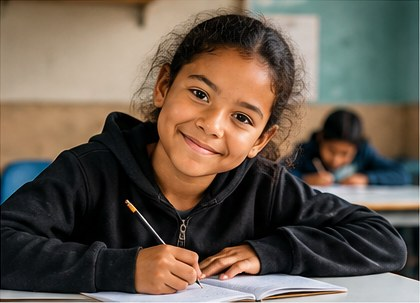
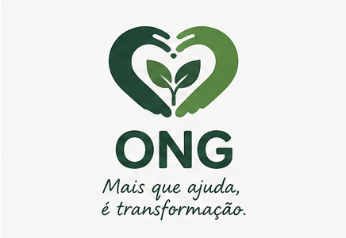
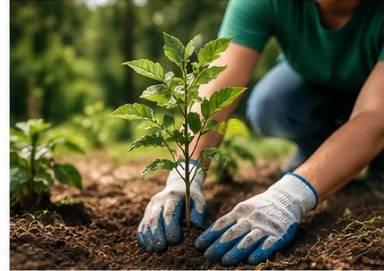
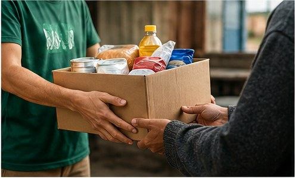

Educação para todos
Projeto ativo
O projeto busca incentivar a educação por meio de atividades de apoio escolar e distribuição de materiais.

Conheça nossas principais iniciativas e veja como você pode contribuir para as ações da ONG Esperança.

O projeto busca incentivar a educação por meio de atividades de apoio escolar e distribuição de materiais.

A iniciativa promove ações de plantio, preservação de áreas verdes e conscientização ambiental.

Organizamos campanhas para arrecadar e distribuir alimentos e itens essenciais para famílias que precisam.
As doações ajudam a manter nossos projetos e permitem que mais pessoas sejam atendidas.
Para contribuir, entre em contato com nossa equipe pelo e-mail contato@ongesperanca.org ou pelo telefone (11) 99999-9999.
Você também pode contribuir com seu tempo e suas habilidades. Cadastre seus dados na nossa página de voluntariado para demonstrar seu interesse em participar das ações.
Quero ser voluntário